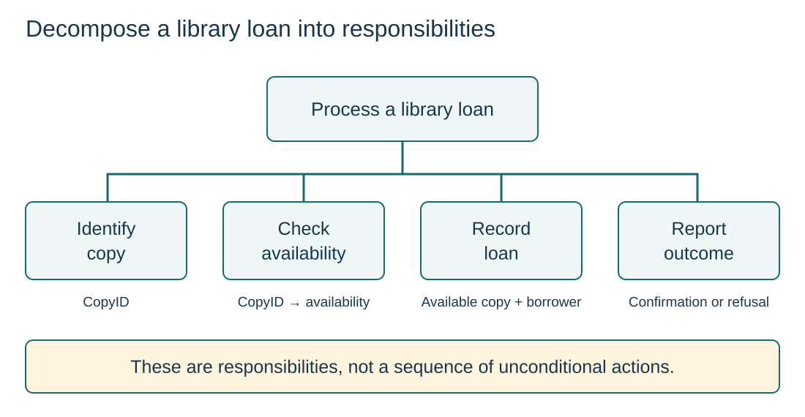

Separate responsibilities
S9.02.A01
Visual overview
Decompose a library loan into responsibilities

Visual transcript
- ProcessLoan is the whole task, decomposed into IdentifyCopy, CheckAvailability, RecordLoan and ReportOutcome.
- The tree shows whole-to-part responsibility; its connectors do not mean that all branches execute unconditionally.
- CopyID links identification to checking. Recording requires an available copy; reporting gives confirmation or a refusal reason.
Core explanation
Decomposition breaks a complex problem into smaller sub-problems. Each part has a clear responsibility; together, the parts must satisfy the original requirements.
Build a useful decomposition
- Name responsibilities: For a loan: identify the copy, check availability, record the loan and report the outcome.
- Connect the parts: Agree the data passed between modules and the conditions under which each is used.
- Check completeness: Every requirement must be handled. Avoid an arbitrary list of screens or repeated names for the whole task.
Why decomposition helps
Smaller parts are easier to understand, implement and test. Agreed interfaces also allow designers to work on separate parts.
Worked example · From a whole task to cooperating parts
- Requirement
A canteen order records choices, calculates the amount due and issues a receipt.
- Breakdown
CollectOrder handles choices; CalculateTotal determines the amount; PrintReceipt presents the accepted order.
- Connection
The collected items and quantities feed the calculation, then the items and total feed the receipt.
- Check
An order with two items must appear correctly in both the total and receipt; the modules cannot use conflicting quantities.